Matemáticas
Trabajo para contenido de página web
CONSULTA DE MATEMÁTICA
Consultar sobre:
1 Las operaciones con polinomios: suma, resta, multiplicación y división. Y dar dos ejemplos de cada operación.
2 Productos notables: ¿Qué son? ¿Cuáles productos notables hay?, casos y dar ejemplos para cada caso.
SOLUCIÒN
OPERACIONES CON POLINOMIAS
SUMA DE POLINOMIOS
1 R//
Al sumar polinomios, es crucial mantener los términos semejantes juntos. Esto implica agrupar los términos con la misma variable y exponente. Después de agrupar los términos, simplemente sumamos los coeficientes de estos términos semejantes para obtener el resultado final. Es importante recordar que los términos que no tienen semejanza simplemente se copian tal como están en el resultado.
Para realizar la suma de dos o más polinomios, se deben sumar los coeficientes de los términos cuya parte literal sean iguales, es decir, las variables y exponentes (o grados) deben ser los mismos en los términos a sumar.
El primer paso consiste en ordenar los polinomios de mayor a menor. Ahora se deberán agrupar los monomios con el mismo grado. Finalmente, se procede a sumar los monomios semejantes.
EJEMPLO:
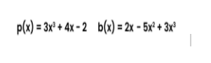
El primer paso consiste en ordenar los polinomios de mayor a menor3
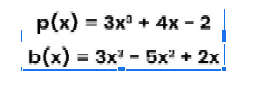
Ahora se deberán agrupar los monomios con el mismo grado.
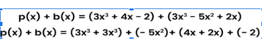
Finalmente, se procede a sumar los monomios semejantes.
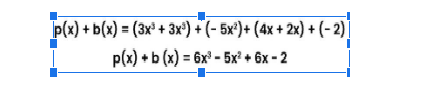
RESTA DE POLINOMIOS
La resta de polinomios sigue un proceso similar a la suma, pero en lugar de sumar los coeficientes de los términos semejantes, los restamos. Al igual que en la suma, agrupamos los términos semejantes y luego restamos los coeficientes correspondientes. Los términos que no tienen semejanza se copian en el resultado tal como están, pero en la resta, los términos del segundo polinomio se toman con un signo negativo antes de realizar la operación.
Para restar polinomios se deberá sumar al minuendo el opuesto del sustraendo teniendo en cuenta la ley de los signos.
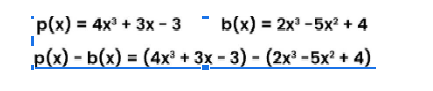
Primero se debe obtener el sustraendo de b(x). Esto se hará resolviendo ese paréntesis.
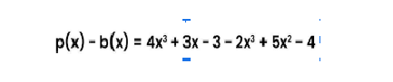
Se agrupan los términos semejantes.
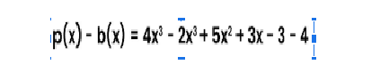
Y Se operan elementos similares
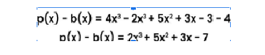
Multiplicación de Polinomios:
La multiplicación de polinomios implica aplicar la propiedad distributiva repetidamente para expandir la expresión. Para cada término en el primer polinomio, lo multiplicamos por cada término en el segundo polinomio y luego sumamos los productos resultantes. Después de realizar todas las multiplicaciones, combinamos términos semejantes para simplificar la expresión lo más posible
Ejemplo
1 Se multiplica cada monomio del primer polinomio por todos los elementos del
segundo polinomios
P(x) · Q(x) = (2x² − 3) · (2x³ − 3x² + 4x) = 4x5 − 6x4 + 8x³ − 6x³ + 9x² − 12x
2 Se suman los monomios del mismo grado (suma de términos semejantes) y obtenemos:
4x5 − 6x4 + 2x³ + 9x² − 12x
3 El polinomio obtenido es otro polinomio cuyo grado es la suma de los grados de los polinomios
que se multiplicaron.
Grado del polinomio resultante = Grado de P(x) + Grado de Q(x) = 2 + 3 = 5
División de Polinomios
La división de polinomios se realiza mediante el método de la división larga. Al igual que en la división larga de números, dividimos el término con el mayor grado del dividendo por el término con el mayor grado del divisor. Luego multiplicamos el divisor por el cociente parcial y restamos este resultado del dividendo original. Repetimos este proceso hasta que no podamos dividir más, obteniendo así el cociente final y, posiblemente, un residuo.
Estas operaciones son fundamentales en matemáticas y se utilizan ampliamente en álgebra, cálculo y diversas áreas de la ciencia y la ingeniería para resolver problemas y modelar situaciones del mundo real
Ejemplo:
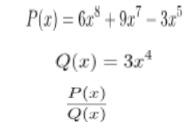
En primer lugar separamos los términos
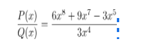
Se procede a dividir como en el caso de la división de monomios;
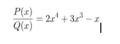
ejemplo 2
(6x^3+9x^2-15) /(3x+5)= 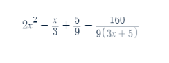
2R//En esencia, un producto notable es una expresión algebraica que se presenta de manera recurrente y que tiene una forma específica que facilita su manipulación y cálculo. En el álgebra es común encontrarnos con expresiones elevadas al cuadrado, al cubo o multiplicadas entre sí
*El cuadrado de un binomio:
(a + b)^2 = a^2 + 2ab + b^2
Ejemplo: (x + 3)^2 = x^2 + 6x + 9
*La diferencia de cuadrados:
a^2 - b^2 = (a + b)(a - b)
Ejemplo: x^2 - 4 = (x + 2)(x - 2)
Ejemplo: 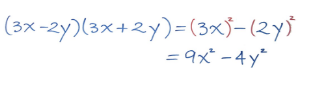
*El cubo de un binomio:
(a + b)^3 = a^3 + 3a^2b + 3ab^2 + b^3
Ejemplo: (x - 2)^3 = x^3 - 6x^2 + 12x – 8
Ejemplo 2: